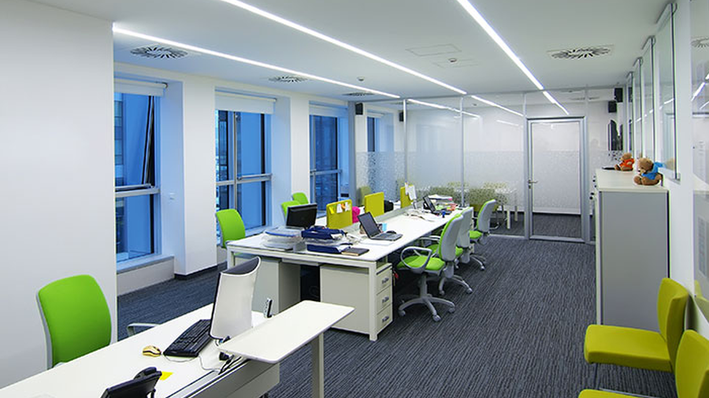
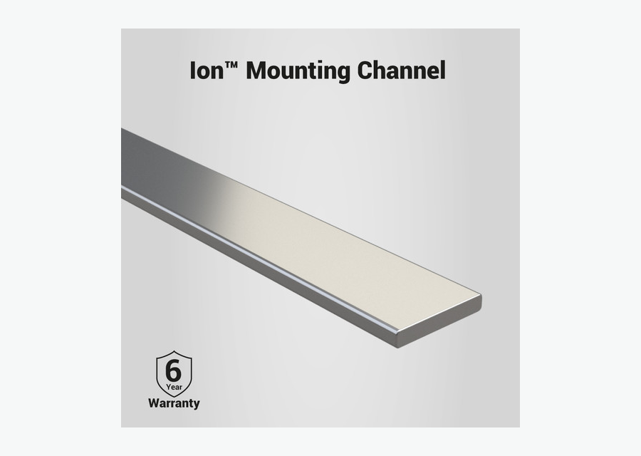

Luz de tarefa
A bancada pede luz clara, uniforme e sem sombra forte nas mãos.

Aplicação • Kitchen Lighting
A cozinha precisa de luz útil na bancada e acabamento limpo na marcenaria. Inspirada na estrutura de Kitchen Lighting da Flexfire, esta página organiza a escolha por uso: sob armário, bancada, prateleira, ilha e armário interno. Para a maioria dos projetos, COB 4000K com perfil de alumínio é uma combinação equilibrada.
SEO e intenção
Palavra-chave principal: fita de led para cozinha. Variações usadas sem repetição excessiva: fita de led na cozinha, fita de led para armario, fita de led para armário de cozinha, fita de led embaixo do armário da cozinha.
A bancada pede luz clara, uniforme e sem sombra forte nas mãos.
Perfil de alumínio ajuda a esconder a fita, proteger contra toque e dissipar calor.
4000K tende a mostrar alimentos, pedra e acabamento com aparência neutra.
Produtos indicados
A lógica segue páginas fortes de aplicação: primeiro o ambiente, depois o problema técnico, depois o produto certo para cotação.


Instalação limpa sob armários e em marcenaria planejada.
Ver produto
Guia de especificação
A cozinha é uma das aplicações mais comerciais para fita LED porque une estética e função. A página deve educar sobre posição, temperatura de cor e acabamento. Sob armário, a fita deve ficar próxima à frente do móvel para iluminar a bancada sem criar sombra. Em nichos e prateleiras, o perfil melhora o visual e facilita manutenção. Em áreas próximas à pia, avalie proteção contra umidade.
Subcenários
Esses blocos ajudam a cobrir buscas de cauda longa e dão caminhos claros para arquitetos, lojistas e compradores B2B.
Luz de tarefa sob armário superior.
Planejar este usoIluminação para gavetas, prateleiras e despensa.
Planejar este usoLinhas de luz decorativas em marcenaria.
Planejar este usoFAQ técnico
Respostas focadas em objeções reais de compra: cor da luz, proteção, fonte, perfil, instalação e manutenção.
COB 4000K em perfil de alumínio é uma boa escolha para luz neutra e acabamento limpo.
4000K costuma ser melhor para bancada e tarefa. 3000K pode funcionar em efeito decorativo.
É recomendado, porque protege a fita, melhora acabamento e ajuda na dissipação.
Pode, mas é preciso avaliar proteção IP, vedação e posição da fonte.
Cotação B2B
Envie ambiente, metragem, tensão, temperatura de cor, proteção IP desejada e fotos da obra. A equipe pode indicar fita, perfil, fonte e acessórios compatíveis.